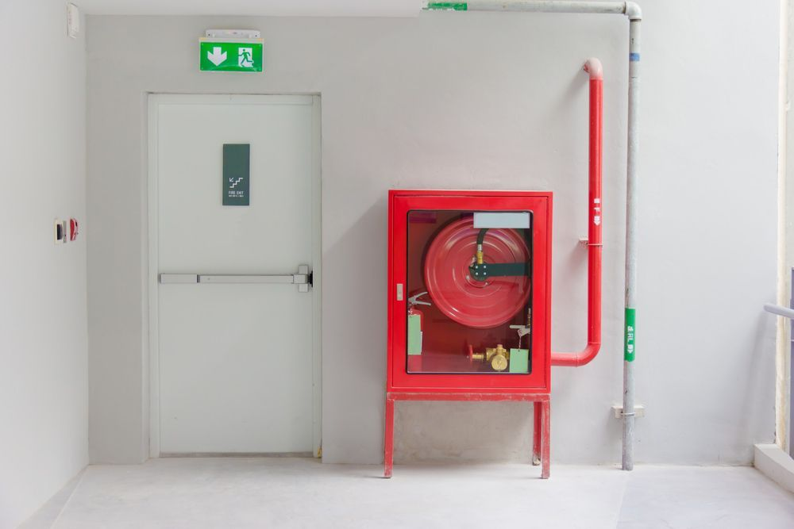

On this page
AT A GLANCE
Fire doors and fire exits are critical components of any building's fire protection and safety plan.

Reliable Fire Door Hardware
Fire doors and fire exits are critical components of any building's fire protection and safety plan. They are specially designed to withstand flames and prevent the spread of smoke, giving occupants more time to evacuate safely in the event of a fire. However, installing fire doors alone is not enough; they also require compatible hardware to meet building code requirements.
At SPL Security Solutions, we stock a large selection of fire door hardware ready for next-day delivery. Our range includes hinges, seals, door closers, handle sets, lock sets and much more from top brands, such as Lockwood, Dorma and Ingersoll Rand. Each product complies with the latest safety standards and regulations, ensuring peace of mind.
Whether you're looking to upgrade existing fire doors or require new hardware for a construction project, call (07) 5588 8111. We also supply closers, seals and levers throughout the Gold Coast, Brisbane and Northern NSW.
Public vs Non-Public Fire Doors
Ensuring a fire door provides complete protection involves more than door seals alone. That’s why we offer a range of fire exit hardware for public and non-public areas, depending on the number of people occupying that environment.
- For public areas: Our products are designed to be intuitive and require minimal effort to operate, as in emergency situations, quick and easy access is paramount. These include panic exit devices that can be operated under pressure by people unfamiliar with the building layout, ensuring everyone can exit safely and efficiently. We supply single and double door sets, door sets for rebated doors, latch bars and more.
- For non-public areas: Where traffic is lower and users are more likely to be familiar with the exit mechanisms, our solutions focus on security without compromising on safety. These areas can benefit from less complex systems, tailored to ensure those with the necessary training can use them effectively while still preventing unauthorised access. We supply door push pads, bars and more.
